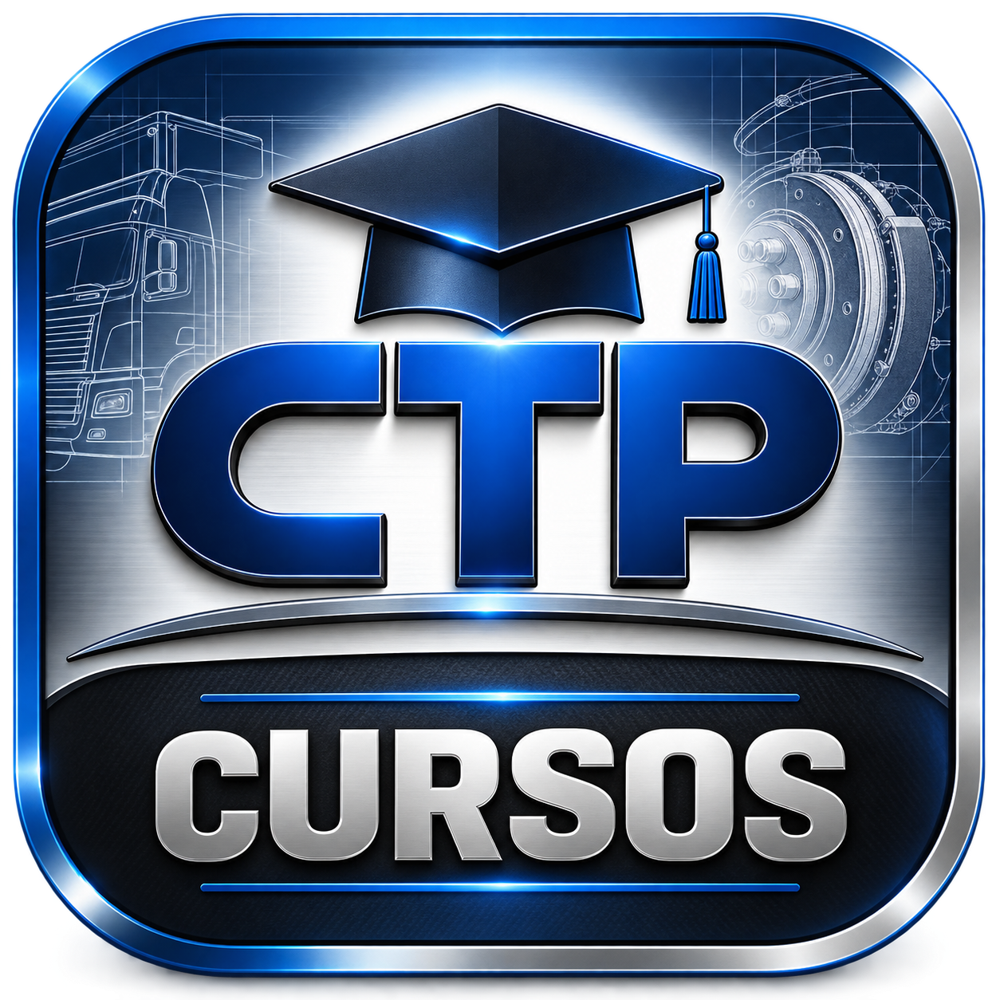

Curso voltado à capacitação para exames periciais em sinistros de trânsito, abordando os principais elementos técnicos necessários à análise e reconstrução do evento.
Ver cursoCurso voltado ao exame pericial dos sistemas de freio de veículos pesados, com abordagem prática dos componentes, funcionamento e principais falhas.
Ver curso